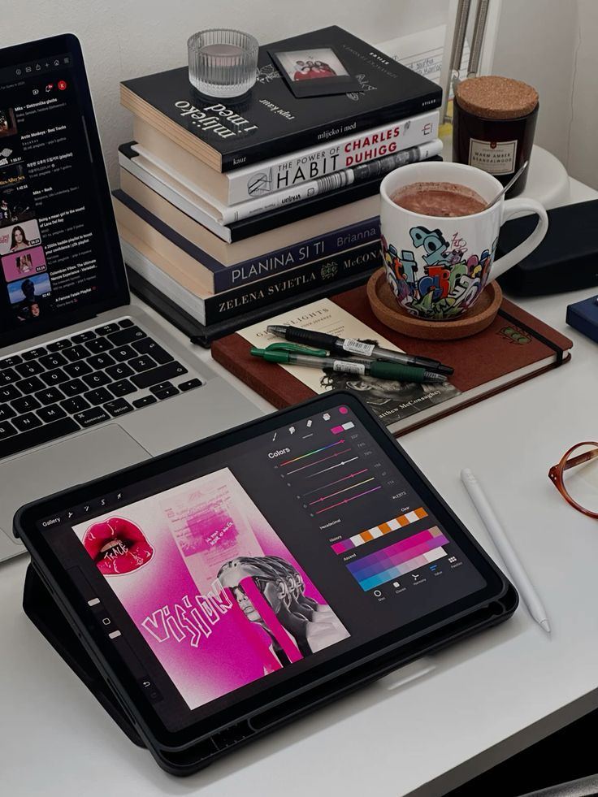

Artify Portfolio je moderna portfolio platforma za dizajnere,umetnike i kreatore.Na ovoj platformi možete istražiti UX/UI dizajn,web dizajn projekte i kreativne radove koji predstavljaju jedinstvenu viziju autora.
Artify nije samo portfolio — to je prostor gde kreativnost postaje vidljiva, organizovana i profesionalno predstavljena.
Prikaži svoje projekte na moderan i profesionalan način.
Minimalistički UI koji fokus stavlja na tvoju umetnost.
Poveži se sa klijentima i kreativcima širom sveta.
Artify je moderna portfolio platforma namenjena promociji kreativnih radova, fotografije, dizajna i umetničkih projekata, gde korisnici mogu predstaviti svoju kreativnost i podeliti svoje radove sa drugima.
Saznaj višeOva portfolio stranica pruža pregled različitih oblasti kreativnog stvaralaštva za koje je moguće izraditi profesionalan portfolio sajt.Kroz primere i prikazane radove možete steći uvid u načine predstavljanja fotografije, grafičkog dizajna, digitalne umetnosti, ilustracija, web dizajna i drugih kreativnih disciplina.Cilj portfolija je da pokaže kako kvalitetno organizovan i vizuelno privlačan sajt može doprineti promociji umetnika, izgradnji ličnog brenda i predstavljanju radova potencijalnim klijentima i saradnicima.
